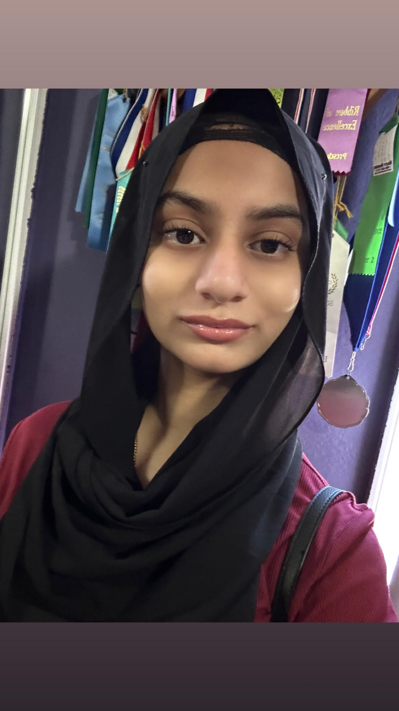

Anam Ahmed
Fremont, California Chapter Vice President
Hey! My name is Anam Ahmed and I’m a sophomore at Kennedy High School. I am so excited to be a part of the Hearts for Healing team and I look forward to helping it make a lasting impact on the community.
I have been volunteering since the age of seven, and last year I completed over 100 hours of community service. Through Boy Scouts, volunteer opportunities, and other activities, I have gained valuable leadership skills and led numerous service projects. I hope to become an ER nurse so I can use my skills to help people in urgent need and make a real difference in their lives.